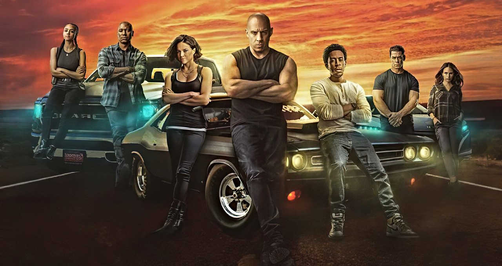

Acidente de Filmagem em Produção de "Velozes e Furiosos" Gera Preocupações de Segurança
São Paulo, 9 de Agosto de 2023 Um acidente de filmagem durante a produção do próximo filme da popular franquia "Velozes e Furiosos" resultou em ferimentos leves para um dos dublês da equipe de produção, gerando preocupações sobre os padrões de segurança no set e o bem-estar dos envolvidos.O incidente ocorreu durante uma cena de alta velocidade envolvendo manobras arriscadas de carros. Embora todos os protocolos de segurança estivessem sendo seguidos, um imprevisto resultou em um acidente que levou o dublê a sofrer ferimentos leves. Ele foi prontamente atendido pela equipe médica no local e encaminhado para avaliações médicas adicionais.
A produção do filme em questão já havia enfrentado atrasos devido a desafios logísticos e outros contratempos. O acidente recente adicionou um elemento adicional de incerteza e preocupação sobre o cronograma de filmagem e a segurança dos envolvidos.
Enquanto a franquia "Velozes e Furiosos" é conhecida por suas cenas de ação espetaculares e sequências emocionantes, o incidente destaca a importância de garantir a segurança de todos os membros da equipe, incluindo dublês, atores e membros da equipe de produção.
Apesar desses desafios, a notícia animadora é que o envolvimento de equipes médicas experientes e a atenção imediata à segurança do dublê ferido permitiram uma resposta eficiente ao incidente. O ferimento foi leve e o dublê está se recuperando bem, o que é um testemunho da importância de ter protocolos de segurança rigorosos em vigor.
Enquanto a produção do próximo filme de "Velozes e Furiosos" continua, a indústria cinematográfica é lembrada da necessidade de equilibrar a busca pela ação emocionante com a prioridade absoluta pela segurança dos envolvidos. O incidente serve como um lembrete de que por trás das cenas de ação impressionantes há indivíduos trabalhando incansavelmente e que sua segurança é fundamental para o sucesso contínuo da franquia.